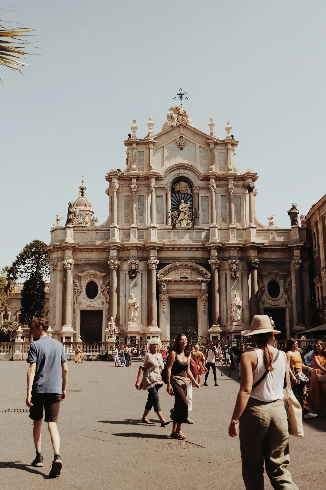
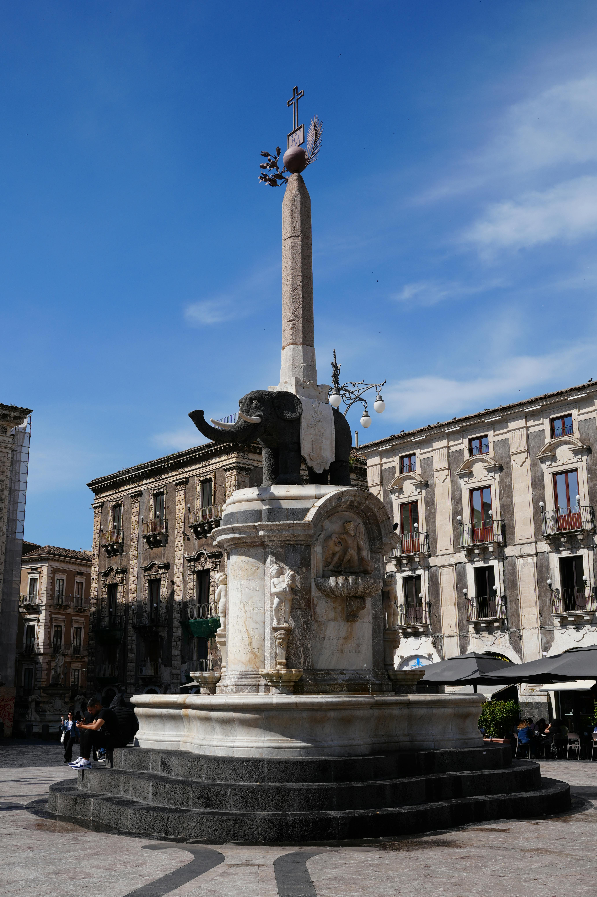
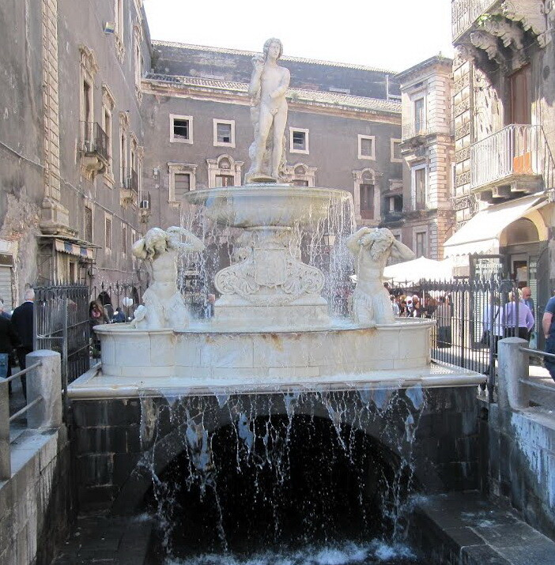
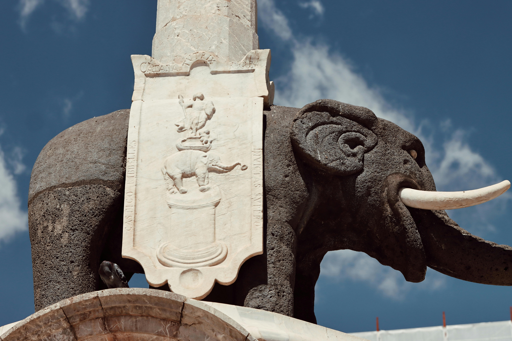

CATANIA

Piazza Duomo, Catania
Situata nel cuore del centro storico, la piazza è da secoli un importante punto di incontro per cittadini e visitatori. Oggi è circondata da numerose attività come ristoranti, negozi, caffè e musei, che la rendono uno dei luoghi più vivaci della città.
La storia della Piazza
Prima del volto barocco che vediamo oggi, la piazza era il centro della città romana e medievale. La prima cattedrale fu fatta costruire dal conte Ruggero il Normanno nel 1092. Era una chiesa-fortezza (ecclesia munita), massiccia e pensata per la difesa. Di quella struttura oggi restano solo le tre absidi in pietra lavica, visibili dal cortile posteriore.
Dopo il terribile sisma del 1693, Catania fu ricostruita seguendo l'eleganza del Barocco Siciliano. L'architetto Gian Battista Vaccarini concepì Piazza Duomo come una grande opera teatrale a cielo aperto: un mix perfetto di ampi spazi e architetture maestose che definiscono l'identità della città. Durante questo periodo furono aggiunti nuovi edifici e importanti elementi architettonici che contribuirono a definire l’aspetto urbano dell’area.
I Protagonisti della Piazza
Cattedrale di Sant'Agata,
ricostruita da Vaccarini con una facciata sfarzosa che alterna marmo bianco e pietra lavica. Custodisce le reliquie della Santa Patrona e la tomba del compositore Vincenzo Bellini.
U Liotru (L’elefante),
Realizzato nel 1736. L'elefante è di pietra lavica (forse di epoca romana) e sorregge un obelisco egizio. Rappresenta la forza della città che non si arrende mai.
Palazzo degli Elefanti,
il municipio fu costruito sopra l'antica Loggia medievale. Al suo interno sono custodite le antiche carrozze del Senato catanese.
Fontana dell’Amenano,
chiamata dai catanesi "Acqua a linzolu" per l'effetto velo dell'acqua che cade come un lenzuolo. È dedicata al fiume Amenano che scorre proprio sotto la piazza.




Curiosità
Il Fiume Fantasma:
Sotto la piazza scorre ancora il fiume Amenano, che fu sepolto dall'eruzione del 1669. Lo puoi vedere chiaramente affacciandoti dalla fontana o scendendo nella pescheria accanto.
La Leggenda del Liotru:
si dice che Eliodoro fosse un nobile catanese che, non essendo riuscito a diventare vescovo, si diede alla magia nera. Secondo il mito, fu lui a scolpire l'elefante nella pietra lavica e a usarlo come cavalcatura magica per viaggiare tra Catania e Costantinopoli.
